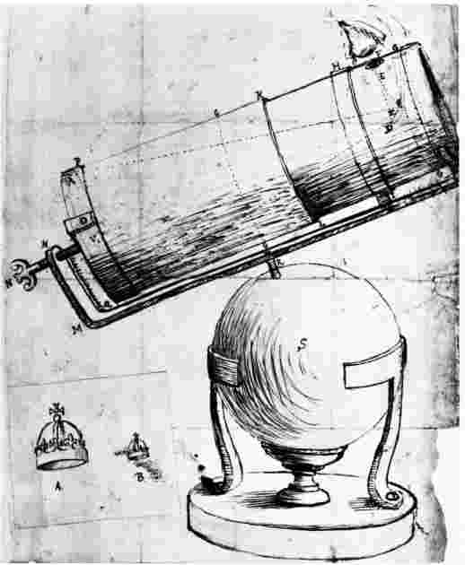
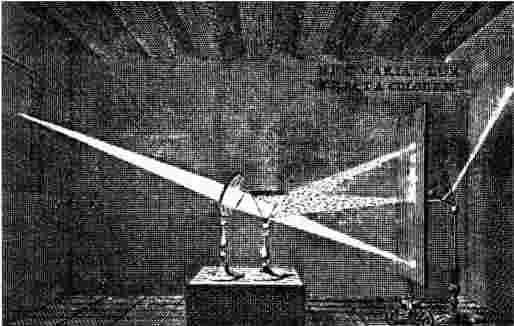

1668年，牛顿成为了三一学院的正研究员。由此开始，他的人生道路发生了重大转折，而这一转折在很大程度上是由艾萨克·巴罗促成的。那时候，巴罗已经发现了牛顿的巨大潜力。他曾感谢牛顿（尽管没有点名）帮助他修订1669年光学现象方面的一本著作——《十八讲》，而牛顿也几乎肯定参加过巴罗在1667与1668年所作的卢卡斯几何光学讲座。那时巴罗大概还不知晓牛顿在光学领域所做的颠覆性工作。在巴罗的支持下，牛顿于1669年9月被选为巴罗的继任者，担任卢卡斯讲座教授。
1669年初，巴罗给牛顿看了一本上年年末出版的书——尼古拉斯·墨卡托的《对数术》。墨卡托发现了一种使用无穷级数来求对数的方法。牛顿后来说他初读《对数术》的时候，还（错误地）以为墨卡托发现了可用来展开分数幂多项式的广义二项式定理。不管怎样，看了墨卡托的书之后，牛顿意识到墨卡托已经开始通过“平方”项来生成无穷级数。这促使牛顿撰写了一篇才华横溢的数学论文，即我们现在称为《无穷级数分析法》（或《分析法》）的那篇论文。这篇论文内涵十分丰富，虽然没有详细阐明二项式定理，但却展示了几个接近sin x与cos x的值的无穷级数。牛顿还提出了求摆线积分与割圆曲线积分的种种技巧。他宣布正切法与求积法是互逆的技巧，并利用1666年10月的那篇论文为他的流数法提供了有力的基础。此外，在1676年写给莱布尼茨的两封重要数学信件中，牛顿还将特别倚重《分析法》一文。
1669年7月底，巴罗将这篇论文寄给身居伦敦的数学家约翰·柯林斯，并于一个月后向柯林斯透露了牛顿的作者身份。无穷级数是当时人们探讨的热点。通过柯林斯，牛顿的那篇论文以及他的数学成就开始引起了其他数学家的注意。实际上，牛顿还于11月在伦敦与柯林斯见了一面，两人一起讨论了牛顿的反射望远镜、级数的扩展、和声的比率等问题，还谈到了牛顿亲自研磨镜片的事实。不过，柯林斯注意到牛顿并不愿透露自己工作背后的基本方法。就在此时，巴罗让牛顿评论一下柯林斯不久前才翻译过来的杰勒德·金克于森的《代数》一书。牛顿写了一篇详尽的评论，不过这篇评论从未公开发表。让柯林斯深感奇怪的是，牛顿无论如何都不愿自己的名字出现在那篇评论中。牛顿在1671年9月向柯林斯清楚地指出，如果他的评论一定要公诸于众的话，他希望能以匿名的形式出现在人们面前。“无论公众中有谁想将我草草写就的东西予以出版”，他都不想“获得此人的敬重”。此后三十年中，这一态度一直都支配着牛顿与其著作的潜在读者之间的关系。
作为卢卡斯讲座教授，牛顿讲授的几何光学与他的前任巴罗所讲授的截然不同。他接二连三地采用实验、棱镜和透镜来证实自己的白光异质性理论，非常重视他在工作中一贯追求的数学精确性与确定性。他坚持认为自然哲学家应该成为几何学者，应该停止探讨那些仅仅是“可能”的知识。在此，牛顿首次公开宣布自然哲学能够达到一种绝对确定的程度，并且自然哲学应该建立在数学原理的基础之上。
此时，如果牛顿愿意发表自己的研究成果的话，他必将被视为当时世界上最多产的科学家之一，而且无疑是世界前所未见的最有才华的数学家。有一段时间，柯林斯一直督促牛顿发表《分析法》一文以及他的光学讲义。牛顿也花了许多精力来修改这两部作品。1671年初，他将《分析法》加以拓展，写成一篇新的关于级数法和流数法的论文；1671年下半年，他重写了自己的光学讲义。与原来的讲义有所不同，新讲义提出在讨论颜色的本质之前，应该先测算光的折射度与反射度。1672年4月，柯林斯再次督促牛顿发表其著作。不料牛顿却告知柯林斯，他原想将光学著作与数学著作合在一起出版发行，但后来却放弃了这一想法，“因为从我那非常有限的发表作品的经历中，我已经发现除非与出版事务划清界限，我将不会获得以前享有的安宁与自由”。可是，那会儿牛顿的名字确实曾作为编者出现在伯纳德·瓦伦纽斯编著的一本关于地理的书上。不过牛顿后来也承认，他对该书没有多少贡献。
牛顿对发表成果的失望源自他首次与国际读者接触的经历。牛顿早就向柯林斯说过他制作了一架反射望远镜。1671年年末，巴罗将牛顿制造的一架新的反射望远镜送给皇家学会，让反射望远镜的话题又一次“热”了起来。皇家学会的秘书亨利·奥登伯格告诉牛顿，他的望远镜深受会员们的好评，“一些光学科学与实践领域的顶级专家”也对其进行了较为细致的审查。奥登伯格还告诉牛顿，他已将一份关于望远镜构造与性能的描述寄给了巴黎的克里斯琴·惠更斯，“以防那些可能在这里或者在您所在的剑桥见过望远镜的陌生人篡夺这一发明”。

图6 皇家学会的一位会员所画的牛顿反射望远镜草图。这架望远镜是牛顿于1671年末呈送给皇家学会的。
在回信中，牛顿对自己的发明表现出了一贯的超然态度。他告诉奥登伯格，那架望远镜已在剑桥静静地放了好几年了，在此期间他并未进行过任何鼓吹宣传。他还就如何生成用来制作镜面的合金提供了建议，并感谢皇家学会选他为会员。接着，牛顿仍以谦虚的姿态接受了学会给他提供的一笔资助，并表示为了对会员们的活动有所裨益，他愿意向他们传递他经过“贫乏而孤独的努力”所获得的一切成果。不过，牛顿在致奥登伯格的另一封信中披露，促使他制作反射望远镜的那个发现在他看来称得上“迄今为止对自然运作最奇特的发现，如果不是最重大的发现的话”。1672年2月初，奥登伯格适时收到了牛顿论述这一发现的那篇划时代的论文。
皇家学会成立于1660年。在其成立后的几年中，学会就对进行实验和描述实验的最佳方法形成了一种观点——实际上就是学会的官方观点。在很大程度上，这种观点是以罗伯特·波义耳采用的方法为基础的。波义耳在其著作中建议，作者应该采取一种“历史叙事”的风格。这就要求作者尽可能详细地描述他们在具体场合所进行的实际活动。但凡有可能，作者都应避免提到任何无法通过实验进行验证的假设，而且不应过于草率地提出普遍性声明，宣称自然在所有类似情况下都会如何如何运作。作者应对他们的声称持有谦虚的态度，而且对自己的观点持有的确信不应超出证据能够支持的程度。任何命题的真伪，都会为时间所证实，都会为其他许多人多次就同一现象进行的重复实验所证实。波义耳认为一些倾向于利用数学方法的自然哲学家对应用数学技巧来研究自然世界过于自信，容易就自己的工作提出无根据的、过于确信的主张。
在2月提交的那篇论文中，牛顿开头以历史叙事的方式叙述道，在尝试研磨非球面透镜的中途，他于1666年买了一个棱镜，在一间黑屋子里让一束阳光通过棱镜，投射到22英尺之外的墙上，以此来测验“颜色现象”。他原想根据折射定律，会在墙上看到一个圆形的映像，但却“惊奇地”发现看到的映像是“长方形的”。根据牛顿的叙述，他逐渐排除了有关“光谱”被拉长的各种解释——包括玻璃的厚薄或者均匀程度，并对实验结果进行了精确的测量。光线进入棱镜的角度（31謖）与光线离开棱镜的角度（2觷49謖）相差太大，难以用传统的折射定律来解释。
“最后”，牛顿写道，他便进行了他所说的experimentum crucis（“关键性实验”，该术语源自培根的instantia crucis [6] ）。关键性实验就是他在那篇关于颜色的最成熟的论文中描述过的双棱镜实验的改进版，不过描述得有些含糊不清。在关键性实验中，牛顿拿了两块板，板上各有一个很小的洞。他把一块板放置在窗前（第一个棱镜就放置在那里），将另一块板放置在离窗12英尺远的地方。他将第一个棱镜绕轴转动，让不同颜色的光线通过第二块板上的洞，射到放在板后的第二个棱镜上。牛顿想通过这个实验显示（这一点在后来有更清楚的体现），虽然不同颜色的光线都以相同的入射角进入第二个棱镜，但是每种色光从第二个棱镜射出时发生的折射幅度，与其原先从第一个棱镜射出时的折射幅度一样大。每种色光的折射率并没有为第二个棱镜所修改，所以每种色光都具有一种内在的“发生特定幅 度折射的……趋势”。 牛顿评论说，由此产生的色差限制了折射望远镜成像的精确度。
论文写到一半的时候，牛顿便放弃了历史叙事的写法，声明如果继续那样写下去，就会使他的文章变得“乏味而混乱”。他写道，自然哲学家会惊奇地发现，颜色理论是一门基于数学原则之上的“科学”；颜色理论具有无可争议的实验基础，因此不是假设的，而是绝对确定的。在论文的剩余部分，牛顿列出了自己颜色理论的“原则”，并增加了一两个实验予以说明。一束特定颜色的光线连续通过几个棱镜时会“顽固地保持其颜色”，“不管我怎样努力，都无法改变其颜色”。最奇妙的是，牛顿欣喜地写道，他发现白光是由所有原色光混合而成的。牛顿称他的理论可以解释一切自然物体的颜色：我们之所以看到物体呈现出某种颜色，是因为它们倾向于反射某些色光而不反射其他色光的缘故。在论文结尾，牛顿提出了一个将给他带来无数麻烦的宣称：光是物质的（即由物体组成的）这一事实也许 再也不容否认了。但他接着写道，要确定光究竟为何物，或者要确定光究竟如何被折射或者“以何种模式和动作在我们的大脑中产生颜色的幻觉”，这要比确定白光的组成困难多了。不过，牛顿也指出，他最后关于光的本质的声称对他论文的论点并不是至关重要的，而他不会将“确信与臆测混为一谈”。

图7 关键性实验。翻印自牛顿的法文版《光学》（第二版）。
这篇论文不仅是现代史上对普遍接受的光学观点提出的最大挑战，而且还清楚地表明牛顿眼中调查与证明科学宣称的正当方法应该是什么。奥登伯格在回信中告诉牛顿，学会的会员们“专心致志地”考察了该篇论文，并对它“发出了难得的喝彩”。他要求牛顿同意将此文发表在《哲学会报》上。奥登伯格还提到，学会决定让一些会员尝试重复论文中描述的实验以及其他一些相关实验。牛顿回信说他之所以将论文寄给皇家学会，是因为他认为学会会员们是“哲学事务最公正、最能干的鉴定人”。牛顿还说他“并没有将论文披露给有偏见的、好挑剔的大众（许多真理就是因为被披露给了大众而受到阻隔以致消失了）”，所以他现在可以“自由地”将注意力“转向一群明智而公平的人士”，并为此“深感荣幸”。
反射望远镜的结构说明以及关于光与色的论文一并发表了，这让牛顿声名鹊起。几位同时代的哲学家，包括有名如克里斯琴·惠更斯者，都对牛顿的发明赞许有加。然而，论文发表后不到一周时间，皇家学会的明星会员罗伯特·胡克就写信给奥登伯格，称自己对牛顿的理论持有重大保留意见。虽然胡克同意牛顿的实验现象是真实的，但他不相信光的不同折射度只能由牛顿的白光异质性理论来解释，他也不同意牛顿的实验表明光是物质的。胡克宣布他早就发现了类似的现象，认为牛顿关于白光的理论并不像牛顿自己在论文中展示的那么确定。
胡克自己的假设是：光是通过匀质的、无形的介质传播的一种脉冲或运动，而颜色就是由光经过折射而产生的改变引起的。胡克宣称这一假设是在成百上千个实验的基础上得出的。如果牛顿真有一个非常有说服力的关键性实验来证明自己的论点，那胡克定会欣然同意牛顿的理论。可是，他还可以想出无数其他的假设来解释牛顿实验中发生的现象。为什么组成颜色的所有的运动在撞击棱镜之前 应该聚拢在白光中？这完全没有什么必然性。这就像说在风琴的管子发出声音之前，所有的声音都“在”风箱中一样毫无必然性。牛顿的理论充其量是一种假设——不过是“一种非常精妙而灵巧的假设”，完全不像一个数学证明那么确定。
1672年6月，牛顿从自己的实验记录本以及光学讲义中选取大量数据，撰长文答复了胡克。这份答复本身构成了光学领域的一份重要文献。在答复开头，牛顿先以高傲的姿态谴责了胡克的行为。胡克本该“施惠”于他，给他写一份私人信件的。胡克归之于他的那个“假设”并不是他在论文中所表达的那个假设，因为他在论文中并没有坚持光是否为一种物体。他鄙视“假设”，在论文中没有理睬“假设”，在谈到光时只是“用笼统的术语将光抽象地视为由发光体向各个方向沿直线发送的某种东西，而并未指明这种东西究竟为何物”。
接着，牛顿利用他早在学生时代就得出的论据，对胡克的光的波动说进行了直接攻击。牛顿说，也许有人会承认胡克的波动说能够解释他所描述的实验现象，但胡克的这个假设面临着一系列问题。液体的波动与振动并不沿直线运行，但光却似乎是按直线传播的。更糟的是，由于不同的物体必然会渗出“不同”的脉冲，那么普通光肯定是由这些不同的脉冲构成的混合物，或者是“不同光束聚集而成的一种集合体”，而这恰恰是牛顿所主张的光的异质性。牛顿继续大力攻击胡克：胡克的假设不仅不够充分，而且难以理喻。胡克如果是一位稍有廉耻之心的实验者，就该发现他所说的是真实的。“从总体上”来考虑光，基本颜色应该不止两种，而胡克的声称与此相悖。牛顿称他的关键性实验的确名至实归。
胡克当然不会感受不到牛顿信中的语气。在致皇家学会一位资深会员的信中，胡克写道自己后来又按照牛顿的提示，拿棱镜和有色环做了进一步的实验，但依然无法相信牛顿的理论。不过，他又说如果他的信冒犯了牛顿的话，他对此表示抱歉，因为那封信原本就没有打算让牛顿过目。胡克强调指出，他对自己的观点确实有很好的证据。的确，胡克做过一些折射实验，表明在特定条件下，光的确会扫射到“阴影”区域。胡克说如果他的假设让人难以理解，他对此感到抱歉。不过，胡克也不无讽刺地指出，他并“不怀疑”牛顿能够解释原色光在折射后如何保持自己固定的折射度，之后又如何被聚在一起而“合为一体，然后又彼此分离，不受干扰地沿直线运行，好像从未相遇一样”。牛顿也许能够理解其中的奥妙，但是胡克理解不了，他也无法理解此时的牛顿何以害怕说明光线究竟是 什么东西。
胡克在回应中固执地认为，哲学解释必须为解释对象提出可以理解的物理原因，这就给自然哲学家理解牛顿的理论定下了一个模式。次年年初，克里斯琴·惠更斯再次提到了胡克曾经提出的观点，大意是说其他所有颜色都由基本颜色生成，而基本颜色的数目是有限的。惠更斯还指出，牛顿并没有遵守机械哲学的基本原则，也就是说，牛顿应该提出一个物理假设，来解释光通过棱镜后何以会展示出不同的颜色。惠更斯说，如果牛顿做不到这一点，那么“他没有告诉我们颜色的本质与差异，他教给我们的就只有不同颜色具有不同折射度这样一个偶然事件了（当然这一现象本身也是非常值得考虑的）”。
惠更斯的批评似乎超出了牛顿忍受的极限。牛顿提笔给奥登伯格写信，说他想退出皇家学会，因为他与伦敦之间的“距离”使得他无法给学会带来裨益。同时，牛顿还告诉柯林斯，他受到了学会一些成员的“无礼对待”。牛顿的这一意见被反馈到皇家学会的秘书奥登伯格那里。奥登伯格在给牛顿的信中提到胡克时说，每个团体中都会有一个麻烦制造者，但“就整体而言，学会成员都很尊敬和爱戴您”。
不过，牛顿还是给惠更斯去了一封措辞激烈的复信。牛顿说要由黄色与蓝色合成光经棱镜折射后产生各种颜色是不可能的，而光的基本现象仅是由两种光线引起的，这一解释也让人难以信服。虽然牛顿在最初的论文中就提到过简单光与复合光可能看上去一样，只有通过实验才能分开，但惠更斯的评论迫使他再次指出这一点。如果白光能够 仅仅由两种色光组成，那就意味着色光本身就是复合的，而不是原始的。好像嫌自己的语气还不够粗鲁一样，牛顿斥责道：这一点是如此明显，“以至于我觉得认识到这一点不该有丝毫的迟疑，对那些懂得如何检验一种颜色是简单的还是复合的以及一种颜色是由什么颜色构成的人来说更应如此”。
虽然奥登伯格曾跟惠更斯说过牛顿是一个非常率直的人，但惠更斯还是被牛顿的这种态度激怒了。他说如果牛顿这么激烈地为自己的理论辩护，他就不想再跟牛顿有什么争论了。不过，惠更斯还是非常大方地给牛顿寄送了一本他撰写的、非常出色的书——《摆钟》。牛顿感谢惠更斯赠书，说该书充满了“非常敏锐而有用的推论”（譬如离心力方程），但对于惠更斯对他信中语气的批评，牛顿回应说向他提出他已经回答过的异议，似乎有点“不近情义”。在写给奥登伯格的一封含有对惠更斯的回应的信中，牛顿重申了他“不再热衷于哲学事务”的打算。
此后，牛顿仍间歇性地与柯林斯以及其他一些数学家通信，讨论协助建立对数表、平方表、平方根表与立方根表的捷径与技巧。不过，这时候牛顿的生活中发生了其他一些事情。1674年年末，牛顿面临着这样一件事：若要保住他在三一学院的研究员身份，他就得接受神职，从而确认他对圣三位一体教义的信仰。由于下一章将会解释的那些原因，牛顿已不可能再接受神职。次年1月，牛顿曾向奥登伯格暗示，他很快就要失去自己在三一学院的职位了。不过，牛顿于次年2月底去了一趟伦敦，会晤了政府的一些高层官员。之后，他便得到特许，允许他在1675年春不领圣命而继续担任研究员。巴罗（时任三一学院院长）的支持很可能是牛顿成功获得特许的关键因素。
就在牛顿认为自己摆脱了公开争论之时，一连串新的轻率的通信又将他拖回到公开争论之中。列日耶稣会会士弗朗西斯·利努斯写了一篇批评文章，由此掀起了对牛顿理论的新一轮攻击。利努斯1675年去世以后，他的同事们代表他继续攻击牛顿的理论。他们批评说，牛顿在论文中所给的各种指示操作起来很困难，而且重复实验也很难取得牛顿所说的实验结果。在一定程度上，牛顿原先已经预见到了这些问题。他采用的数学方法必然会带来这些问题，因为数学方法处理的是一两个抽象的、理想化的实验情形，而不会是许多相关实验的一些详细描述。起初，皇家学会的会员就牛顿关于光与色的理论写下了一些疑问，当奥登伯格将这些疑问寄给牛顿后，牛顿也承认他论文中的说明有些晦涩，并说如果当初就想着要发表的话，他就会描述得更详细一些，还会加入更多的图解。
牛顿与利努斯的同事约翰·加斯科因和安东尼·卢卡斯之间的通信进一步扩大了牛顿原先与利努斯之间的争执。英国的多位自然哲学家在重复牛顿的大多数实验时似乎并没有遇到多少麻烦，但牛顿与耶稣会会士之间的通信表明，即使是一些很有造诣的哲学家，在重复牛顿的实验时也会遇到重重困难，甚至要理解这些实验的要点也非常困难。从耶稣会会士一方来看，他们认为自己是在奉行皇家学会的基本原则，相信只有通过一些不同的实验来了解一个理论的不同方面，才能逐渐积累起科学知识。他们说由于牛顿的理论过于新颖，所以就得由牛顿自己来证明这个理论。但在牛顿看来，耶稣会会士是在明目张胆地攻击他的真诚和能力。他坚持认为自己的关键性实验就足以证明他的理论是站得住脚的。他批评耶稣会会士没有按照他的指示做实验，批评他们没有能力按照要求的精度去测量折射角度（要精确到分，而不仅仅是度），批评他们使用的棱镜不够格，而且依赖早已作古的实验者。
1677年的某个时候，牛顿再次决定出版自己的光学著作（可能要与他关于无穷级数的著作一起发表），包括他的光学讲义和已经发表的通信。那年3月，牛顿让一位叫戴维·洛根的艺术家给他刻了一幅画像，准备作为这部著作的卷首插图，但后来事情并没有按计划进行。1678年2月，牛顿向卢卡斯索要一份卢卡斯早期（1676年10月）来信的副本，因为他在一场火灾中失去了这封信的原件。那场火灾应该发生在不久之前，毁坏了牛顿的许多论文，而且让原来计划的出版工作泡了汤。碰巧，卢卡斯在两个月前就已征得牛顿的首肯，将这封信发表在《哲学会报》上了。于是，这封信就经由罗伯特·胡克转到了牛顿的手上。胡克是奥登伯格刚刚去世之后皇家学会的几位新任秘书之一。可是不知怎的，牛顿发现卢卡斯发给胡克要求发表在《哲学会报》上的那封信跟原件稍有不同。1678年3月，牛顿在写给卢卡斯的最后一封信中，对卢卡斯早期信件所体现的低下的科学质量破口大骂。处于崩溃边缘的牛顿称卢卡斯及其耶稣会会士“友人”策划了一个针对他的阴谋。他们将他“逼”入他深恶痛绝的公开辩论之中。牛顿告诉卢卡斯，他认为卢卡斯的大多数观点都太“无力”，无法予以承认，而牛顿不愿与卢卡斯“争论”还有“其他谨慎的原因”。如果和耶稣会会士的公开争论让他大倒胃口，他大可以将时间花在其他有意思的事情上。